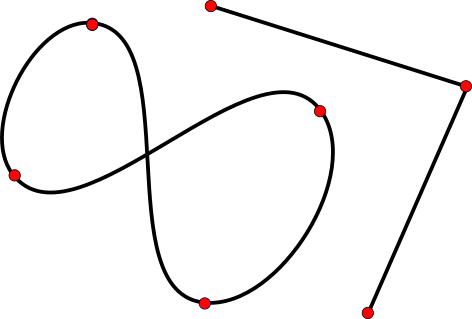
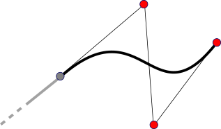
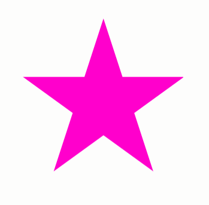
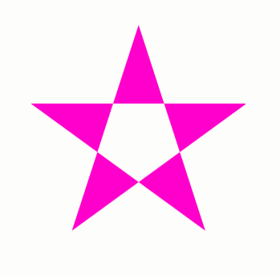
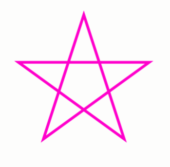
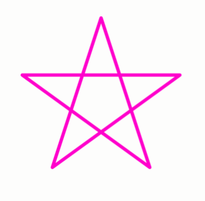
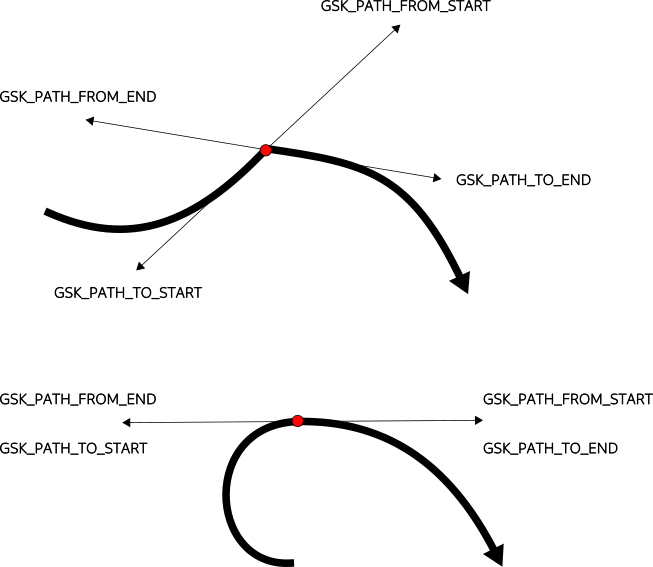

Paths [src]
GSK provides a path API that can be used to render more complex shapes than lines or rounded rectangles. It is comparable to cairos path API, with some notable differences.
In general, a path consists of one or more connected contours, each of which may have multiple operations, and may or may not be closed. Operations can be straight lines or curves of various kinds. At the points where the operations connect, the path can have sharp turns.

The central object of the GSK path API is the immutable GskPath
struct, which contains path data in compact form suitable for rendering.
Creating Paths
Since GskPath is immutable, the auxiliary GskPathBuilder struct
can be used to construct a path piece by piece. The pieces are specified with
points, some of which will be on the path, while others are just control points
that are used to influence the shape of the resulting path.

The GskPathBuilder API has three distinct groups of functions:
-
Functions for building contours from individual operations, like
gsk_path_builder_move_to(),gsk_path_builder_line_to(),gsk_path_builder_cubic_to(),gsk_path_builder_close().GskPathBuildermaintains a current point, so these methods all take one less points than necessary for the operation (e.g.gsk_path_builder_line_toonly takes a single point and draws a line from the current point to the new point). -
Functions for adding complete contours, such as
gsk_path_builder_add_rect(),gsk_path_builder_add_rounded_rect(),gsk_path_builder_add_circle(). -
Adding parts of a preexisting path. Functions in this group include
gsk_path_builder_add_path()andgsk_path_builder_add_segment().
When you are done with building a path, you can convert the accumulated path
data into a GskPath struct with gsk_path_builder_free_to_path().
A sometimes convenient alternative is to create a path from a serialized form,
with gsk_path_parse(). This function interprets strings in SVG path syntax,
such as:
M 100 100 C 100 200 200 200 200 100 Z
Rendering with Paths
There are two main ways to render with paths. The first is to fill the
interior of a path with a color or more complex content, such as a gradient.
GSK supports different ways of determining what part of the plane are interior
to the path, which can be selected with a GskFillRule value.


To fill a path, use gtk_snapshot_append_fill() or the more general gtk_snapshot_push_fill().
Alternatively, a path can be stroked, which means to emulate drawing with an idealized pen along the path. The result of stroking a path is another path (the stroke path), which is then filled.
The stroke operation can be influenced with the GskStroke struct
that collects various stroke parameters, such as the line width, the style
of line joins and line caps, and a dash pattern.


To stroke a path, use gtk_snapshot_append_stroke() or gtk_snapshot_push_stroke().
Hit testing
When paths are rendered as part of an interactive interface, it is sometimes
necessary to determine whether the mouse points is over the path. GSK provides
gsk_path_in_fill() for this purpose.
Path length
An important property of paths is their length. Computing it efficiently
requires caching, therefore GSK provides a separate GskPathMeasure object
to deal with path lengths. After constructing a GskPathMeasure object for a path,
it can be used to determine the length of the path with gsk_path_measure_get_length()
and locate points at a given distance into the path with gsk_path_measure_get_point().
Other Path APIs
Paths have uses beyond rendering, for example as trajectories in animations.
In such uses, it is often important to access properties of paths, such as
their tangents at certain points. GSK provides an abstract representation
for points on a path in the form of the GskPathPoint struct.
You can query properties of a path at certain point once you have a
GskPathPoint representing that point.
GskPathPoint structs can be compared for equality with gsk_path_point_equal()
and ordered wrt. to which one comes first, using gsk_path_point_compare().
To obtain a GskPathPoint, use gsk_path_get_closest_point(),
gsk_path_get_start_point(), gsk_path_get_end_point() or
gsk_path_measure_get_point().
To query properties of the path at a point, use gsk_path_point_get_position(),
gsk_path_point_get_tangent(), gsk_path_point_get_rotation(),
gsk_path_point_get_curvature() and gsk_path_point_get_distance().
Some of the properties can have different values for the path going into the point and the path leaving the point, typically at points where the path takes sharp turns. Examples for this are tangents (which can have up to 4 different values) and curvatures (which can have two different values).

Going beyond GskPath
Lots of powerful functionality can be implemented for paths:
- Finding intersections
- Offsetting curves
- Turning stroke outlines into paths
- Molding curves (making them pass through a given point)
GSK does not provide API for all of these, but it does offer a way to get at
the underlying Bézier curves, so you can implement such functionality yourself.
You can use gsk_path_foreach() to iterate over the operations of the
path, and get the points needed to reconstruct or modify the path piece by piece.
See e.g. the Primer on Bézier curves for inspiration of useful things to explore.